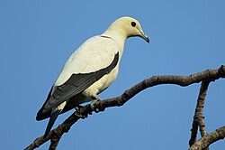

Common Name: Pied Imperial Pigeon (Ducula eximia) Status: Least Concern

Scientific Classification
| Kingdom: | Animalia |
|---|---|
| Phylum: | Chordata |
| Class: | Aves |
| Order: | Columbiformes |
| Family: | Columbidae |
| Genus: | Ducula |
| Species: | D. bicolor |
Size Range/Identification
They are large black-trimmed white pigeons.4 They often perch high on branches of trees/telephone lines and can be found in flocks of 10 or more. Their song is low in pitch and usually sounds like a “woo-oo-woooo,” sound.2 Their size usually ranges from 38-41 cm.3
Habitat/Geology
They usually live in coastal forests on small offshore islands, sometimes they’ll go to the mainland areas to forage and roost. They can be found around Indonesia, the Philippines, Malaysia, Vietnam, and some small parts of Thailand closer to the coast.1
Ecology/Behavior
They’re usually observed feeding or travelling in flocks together. They feed on fruits like palm fruits, wild figs, and nutmegs.4 They can live to be about 4 years in the wild and 8 in captivity. Their breeding season is from January to March and they make nests out of sticks in coconut palms.4 There isn’t enough information on specific predators. They communicate with low-pitched vocals, usually with a distinct “woo-oo-woooo”.2 They also use physical courtship displays like bowing and special flight patterns to signal any potential mates.6